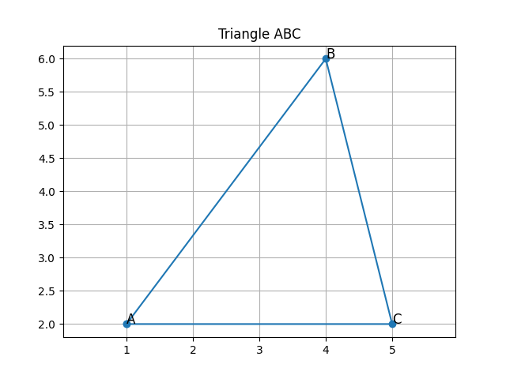

Problem 1: Triangle Properties in 2D Plane
Given three points in a 2D Cartesian coordinate system:
- A(1, 2)
- B(4, 6)
- C(5, 2)
We want to calculate: - the lengths of sides AB, BC, and CA - the perimeter - the area of triangle ABC
Solution
Using the distance formula between two points:
d = √[(x2 - x1)² + (y2 - y1)²]
diff Copy Edit
The lengths are: - AB = √[(4−1)² + (6−2)²] = 5.00 - BC = √[(5−4)² + (2−6)²] = 4.12 - CA = √[(5−1)² + (2−2)²] = 4.00
Perimeter = AB + BC + CA = 13.12
Using Heron’s formula for the area:
s = perimeter / 2 Area = √[s(s−a)(s−b)(s−c)]
yaml Copy Edit
Area ≈ 9.00
Visualization
